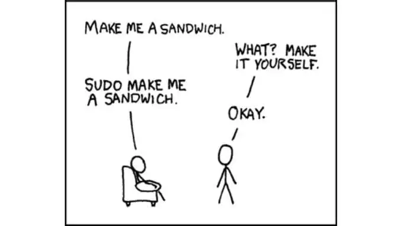

Les systèmes d'exploitation#
Introduction aux systèmes d'exploitation#
Définition d'un système d'exploitation#
Un système d’exploitation est un logiciel, ou ensemble de programmes, qui sert d’interface entre les programmes exécutés par l’utilisateur et les ressources matérielles d’un ordinateur.
Le système d’exploitation :
- fournit une interface entre l’humain et la machine
- gère les ressources de l’ordinateur (mémoire, processeur, périphériques, énergie …)
- gère les utilisateurs ainsi que leurs droits d’accès
- est indépendant du matériel
- rend concret ce qui ne l’est pas (un fichier est par essence abstrait mais nous le considérons bel et bien comme une entité concrète.)
Couches d'un système d'exploitation#
Le système d’exploitation se sépare en deux grandes parties :
- Le noyau (kernel) : gère les ressources de l’ordinateur et permet aux différents composants - matériels et logiciels - de communiquer entre eux. Le noyau n’est généralement pas accessible directement par l’utilisateur. Sa dernière version stable (6.8.4 ) date du 4 avril 2024.
- Les applications : utilisent l’interface proposée par le noyau et sont accessibles aux utilisateurs.

En étant un peu plus précis, on rencontre, du plus bas au plus haut niveau :
- Le matériel : (signaux électriques)
- Le noyau (kernel) : proche du métal. Lance la machine, gère la carte graphique, le réseau etc.
- La coquille (shell) : programme qui permet d’exécuter des utilitaires et d’intéragir (via les fenêtres ou le terminal)
- les applications (ls, firefox) : les programmes qu’on fait tourner grâce au shell

Grandes familles de systèmes d’exploitation#
On en rencontre massivement deux :
- Windows et ses dérivés (MSDOS (~1985), Windows NT (1999), windows 7->10 (2008)). Domine le marché du PC “personnel”
- UNIX et ses dérivés : bsd (systèmes embarqués, réseaux d’entreprises), linux (partout dont android, super calculateurs, PC personnels, serveur web), OSX & iOS(produits apple).
Linux#
Présentation de Linux#
Linux et les systèmes libres Linux ou GNU/Linux est une famille de systèmes d’exploitation open source de type UNIX fondé sur le noyau Linux, crée en 1991 par Linus Torvald.
Un système d’exploitiation de “type UNIX” vérifie quelques caractéristiques parmi lesquelles :
- multi-utilisateur et multitâche
- sécurisé vis-à-vis des manipulations illicites des utilisateurs
- disposant d’un système de fichiers abouti
UNIX était un système d’exploitation apparu dans les années 60, crée au Bell-Labs par Ken Thompson, Dennis Ritchie et Brian Kernighan.
Les deux premiers sont les inventeurs du langage C qu’ils ont développé pour programmer UNIX.
La majorité des “machines” modernes (téléphones, serveurs, super ordinateurs, informatique embarquée etc.) fonctionnent avec un système de type UNIX
L’exception notable concerne les PC personnels et de bureau qui fonctionnent majoritairement sous windows.
Remarque : GNU/Linux
Cet acronynime désigne :
-
Le noyau linux lui même
-
La couche logicielle GNU qu’on trouve dans tous les systèmes UNIX.
définition :
Un logiciel libre est un logiciel dont l'utilisation, l'étude, la modification et la duplication en vue de sa diffusion sont permises, techniquement et légalement.
Exercice : découverte des commandes linux#
Ce TP a été conçu par Charles Poulmaire.
Rendez-vous à l'adresse : http://luffah.xyz/bidules/Terminus/
Noter sur un traitement de texte chaque nouvelle commande avec le plus de détails que vous pourrez. Ces notes peuvent prendre la forme suivante :

Écrire un plan du jeu au fur et à mesure que vous avancez dans votre quête. Par exemple :

Utilisation du shell#
Une interface entre l’utilisateur et le système d’exploitation s’appelle un shell ou interpréteur de commandes.
Le rôle d’un shell est de prendre une entrée de l’utilisateur, de la traduire en instructions compréhensibles par le système d’exploitation et de renvoyer la réponse du système à l’utilisateur.
Il existe deux grandes catégories de shell :
- les interfaces textuelles comme bash, le plus commun sur les systèmes de la famille UNIX.
- les interfaces graphiques qu’on retrouve dans les systèmes d’exploitation grand public tels que Windows.
La syntaxe d’une commande bash est simple : le nom de la commande peut être suivi d’options facultatives introduites par un tiret et d’arguments :
nom_commande -option1 -option2 argument1 argument2.
````
**remarque :**
A l'ouverture d'un terminal :
<figure markdown>
{width=500px}
</figure>
Nous avons ci-dessus la console de l'utilisateur "eric" qui utilise un ordinateur qui se nomme "kali" ("eric@kali").
#### Quelques particularités de Linux
**Linux est sensible à la casse**.
En effet, il distingue les majuscules des minuscules. Ainsi, pour créer un répertoire, la commande est 'mkdir', ce n'est pas la peine d'essayer MKDIR ou mKdiR, cela ne fonctionnera pas. De même, les noms de fichiers et de répertoires sont également sensibles à la casse.
**les chemins sont séparés par des slash** :
Exemple : /etc/init/xfs mais jamais $\backslash$etc$\backslash$init$\backslash$xfs.
**Répertoires spéciaux :**
* . représente le répertoire courant ;
* .. représente le répertoire parent ;
* \~ (tilde) représente le répertoire maison (home) de l'utilisateur.
**Fichiers cachés :**
Sous Unix, les fichiers cachés commencent par un point. Par exemple, ~/.bashrc est un fichier caché, dans le répertoire maison de l'utilisateur, qui contient la configuration de son shell.
**Jokers : ? et *:**
Les caractères ? et \* dans les noms de fichiers et de répertoires permettent de représenter des caractères quelconques. ? représente un seul caractère, tandis que \* en représente un nombre quelconque.
Par exemple `*.jpg` représente tous les fichiers se terminant par jpg ; `*toto*`tous les fichiers contenant `toto`.
Il faut également savoir que c'est le shell qui interprète ces caractères avant de transmettre la ligne de commande.
Par exemple, si vous tapez : `rm *.tmp`, le shell transformera cette ligne de commande en : `rm truc1.tmp truc2.tmp truc3.tmp`.
#### Les commandes
Une commande est l’exécution d’un programme dans l’interprète (Shell).
Elle prend en entrée des options et/ou des paramètres. Elle peut renvoyer de l’information à l’écran ou dans un fichier, modifier un fichier, ou produire un message d’erreur.
Une description de toutes les commandes est disponible avec la commande `man` ou `help`. N’hésitez pas à l’utiliser.
**Naviguer**
* `cd` : se déplacer dans les répertoires.
* `ls` : lister les répertoires et fichiers.
* `pwd` : afficher le répertoire où l'on se trouve exactement.
**Déplacer, copier, renommer :**
* `cp` : copier des fichiers ou des répertoires.
* `mkdir` : créer un dossier.
* `mv` : renommer ou déplacer un fichier ou un dossier.
* `ln` : créer des liens durs et liens symboliques.
* `rm` : supprimer un fichier ou un dossier.
* `rmdir` : supprimer un dossier vide (plus sûre que rm).
* `touch` : créer un fichier.
**Trouver un fichier**
* `find` : recherche pointue !
* `locate` : Recherche accélérée de fichiers ou répertoire.
* `which` : Chemin d'une commande déterminée.
**Lire un fichier texte**
* `cat` : lire le contenu d'un fichier texte.
### Arborescence UNIX
Sur un système Linux, tout est un fichier, y compris un dossier. Mais pour rester compatible avec l'arborescence classique de windows, nous parlerons donc de :
* fichier lorsqu'il s'agit d'une feuille de l'arborescence ;
* dossier lorsqu'on parle d'un noeud ayant des enfants.
L’arborescence d’un système GNU/Linux se présente sous la forme représentée ci-dessous.
<figure markdown>
{width=400px}
</figure>
**Remarque :** on voit que sous GNU/Linux, un fichier ne possède pas forcement une extension.
Voici une brève description des différents dossiers :
Le système de fichiers racine (root file system), soit le système de fichiers primaire est associé au répertoire le plus haut / :
### Chemin relatif ou chemin absolu
La distinction entre chemin relatif et absolu est valable quelque soit le système d'exploitation. Les exemples sont donnés pour un système LINUX.
L’emplacement de chaque ressource (fichier ou répertoire) dans le système de fichiers est appelé son chemin. Dans un chemin Linux, le séparateur dans entre deux répertoires est le caractère /.
On distingue deux types de chemins :
- **Un chemin absolu** identifie une ressource en commençant à la racine de l’arborescence, avec le caractère /. Un chemin absolu ne dépend pas du répertoire courant et est donc valide partout.
`/home/baptiste/hello.txt` et `/etc/apache/httpd.conf` sont des exemples de chemins absolus.
- **Un chemin relatif** identifie une ressource à partir du répertoire courant. Il dépend donc du répertoire courant et n’est pas valide partout.
`../marc/adresses.txt` et `documents/cours/si1.pdf` (sans / au début !) sont des exemples de chemins relatifs.
## Droits et permissions sous UNIX
Le système de droits et de permissions sous UNIX est aspects fondamentaux de la gestion de la sécurité du système.
### Droits et groupes
En Linux, tout fichier, et par extension dossier, appartient à un propriétaire ainsi qu'à un groupe et un utilisateur quelconque ne pourra pas forcément avoir tous les droits sur un fichier qui ne lui appartient pas.
Par exemple, étudions la sortie donnée par la commande `ls -l` suivante :
```linux
drwxr-xr-x 2 eric eric 4096 Apr. 8 23:09 Images
dindique qu'il s'agit d'un dossier ;- les 9 lettres suivantes indiquent les droits dont disposent les utilisateurs sur ce fichier ;
- le 2 est pour nous sans intérêt (il s'agit d'un compteur de liaison) ;
- le groupe de lettre suivant est le nom de l'utilisateur propriétaire du fichier ;
- le groupe de lettre suivant est le nom du groupe propriétaire du fichier ;
- 4096 représente la taille en octet du dossier ;
- on trouve ensuite la date et l'heure de la dernière modication ;
- le nom du dossier.
Pour un fichier, on distinguera trois types d'utilisateurs :
upour user, c'est-à-dire le propriétaire du fichier ;gpour group, le groupe auquel appartient le fichier ;opour other, tous les autres utilisateurs.
Root
Par défaut, il existe un super-utilisateur nommé root qui possède tous les droits sur un os Linux. Pour modier des attributs au niveau système, il faut prendre les droits de super-utilisateur, grâce à la commande sudo (super-user do). Cette commande demande systématiquement à l'utilisateur faisant partie du groupe des super-utilisateurs (sudoers)de confirmer avec son mot de passe (celui choisi à l'installation du système) toute action de modication effectuée au niveau du sytème.

Les droits#
Pour un fichier donné, on distinguera 4 permissions :
r(read) : droit de lire le fichier ;w(write) : droit de modifier le fichier ;x(execute) : droit d'exécution du fichier ;-: aucun droit sur le fichier.
Modification des Droits#
Pour donner ou supprimer des permissions sur un fichier mon_texte.txt, on utilise la commande chmod de la manière suivante :
- pour donner les droits en lecture et écriture à l'utilisateur
- pour supprimer les droits en modication au groupe :
- pour supprimer tous les droits aux autres utilisateurs :
Notation octale#
Il est aussi possible d'utiliser la notation octale pour gérer ces droits. Par exemple, la commande suivante :
en sachant que r = 4, w = 2, x = 1 , et que le premier chiffre correspond à l'utilisateur, le second au groupe, et le troisième aux autres. Ainsi dans l'exemple proposé :
- l'utilisateur à les droits de lecture et d'écriture (4+2 = 6) ;
- le groupe à le droit de lecture (4) ;
- les autres n'ont aucun droit (0).
Une commande telle que chmod 777 mon_texte.txt donne tous les droits de lecture, écriture et exécution à tous les utilisateurs du système pour le fichier mon_texte.txt.